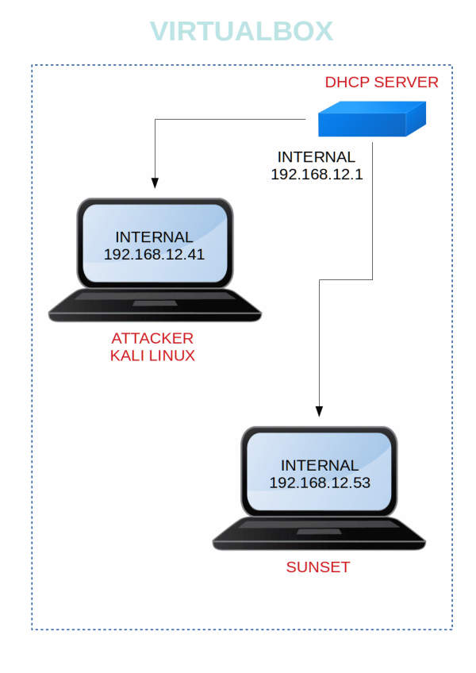

Sunset
▸ Sunset
▸ 1. Scan Network
▸ 2. Finding Services and Ports
▸ 3. Enumeration
▸ 3.1 Getting hashes
▸ 3.2 Crack the hashes
▸ 4. Exploitation and Privilege Escalation
▸ 4.1 Connect via ssh (First flag)
▸ 4.2 Get root (Second flag)
Difficulty: Beginner
Flag: 2
Learning:
• Netdiscover.
• Nmap.
• Login through ftp.
• Cracking hashes with John the Ripper.
• Connect through ssh.
• Exploiting sudo rights.
Download (Mirror): https://download.vulnhub.com/sunset/sunset.zip
Download (Torrent): https://download.vulnhub.com/sunset/sunset.zip.torrent
Install the machine on VirtualBox:
1. Download the file and extract it.
2. On Virtualbox choose File->Import Appliance.
3. Select the file “ova”.
4. Accept to import.
Virtual Machine Network Settings

Watch your Machine IP.

Diagram
 Index
Index